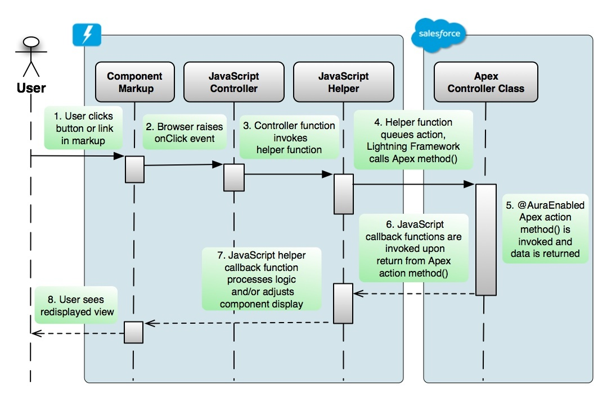

Classic Architecture
Visualforce Logic Lives on the Server
When a page request is made, logic in the Apex custom controller often fetches data that binds directly to rendered HTML elements displayed in the browser when the page is returned.
Apex logic within the controller may also be invoked by AJAX or from other custom JavaScript in the page. In either case, there is only one controller written in Apex, and it runs on the application server.
Lightning Logic Lives on Both Client and Server
With Lightning Components, as with other Single Page App (SPA) frameworks, there are more moving parts involved when binding data.
Developers now have two logic layers to manage:
- a JavaScript client-side controller is required
- Apex server-side controller.
The client-side controller is responsible for handling client-side user actions and events, as well as fetching and binding data to elements in the component’s view.
The Server-side Apex controller methods are used for data transport to and from Salesforce, or executing server-side business processes.
The Client-side event handler functions in a Lightning Component’s JavaScript controller resource can invoke server-side Apex directly, or can delegate invocation to an intermediate JavaScript function in a helper resource.
A helper resource is nothing more than a library of additional JavaScript logic in the component bundle.
The Apex controller class must be specified in the markup of the Component resource in the Lightning Component bundle, and action methods and properties of that Apex class must be annotated with the @AuraEnabled decoration in order to be invoked from client-side JavaScript.
Apex action methods decorated in this way may also have their data returned to client-side JavaScript callback functions when server-side processing completes.
Actions and Events
Lightning applications are highly dependent upon events, but something has to raise them. It’s usually, but not always, a user action
Action: a user interacting with an element on an HTML page is called an action.
Event: Events can be seen as a notification by the browser regarding that action, and events can be handled by client-side logic written in JavaScript.

Initializing Components
While actions can raise events, events are not always explicitly raised by actions.
For example, consider when a component needs to do something, but that process is not explicitly activated by a user interacting with an HTML element in that same component.
In Lightning, we have the ability for certain events to be implicitly raised when something happens to the component itself. We depend on such events to invoke logic when initializing a component.
For example, if we want our component to display data when it first appears, we need an event to activate logic to fetch data and set the view to display it.
Such load behavior is built into the Visualforce model, and we also have the ability to invoke custom behavior on load of a Visualforce page by utilizing the action attribute on the apex:page tag. Using that attribute, a Visualforce developer can bind the page to a server-side Apex controller method that will be invoked implicitly when the page first loads but before it is rendered in the browser.
action in Visualforce:
action="{!doAction}" references the doAction() method in the controller.
```
init in Lightning Component:
Equivalent behavior in a Lightning Component is accomplished by registering an init event in the component markup, and binding it to a JavaScript handler function in the controller resource.
When the component loads, the registered init event is raised, and the controller’s event handler function is invoked. That handler function can then further invoke a server-side Apex action method to fetch some data, which is returned to the callback function in the client-side controller. Simply assigning returned data values to view elements causes the component’s display to refresh.
A component can be instantiated as a result of selecting a menu navigation item, or perhaps by user clicking on a link in a list. The component would need to fire off some server-side Apex logic by this kind of event to fetch some data to display as it initializes.
Batching
Lightning Framework batches its calls to server-side actions resulting in less chatty and more efficient action processing.